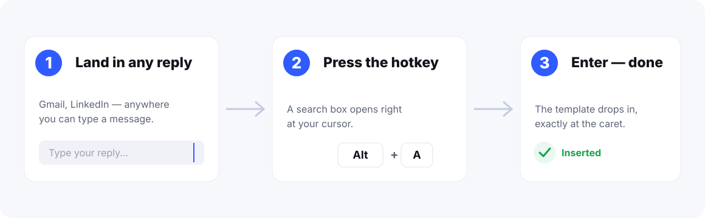
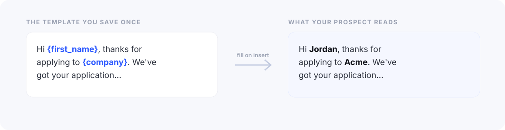

What canned responses actually are
Canned responses are pre-written replies you save once and reuse instead of retyping. Gmail calls them Templates now — though they were literally named "Canned Responses" back in the Gmail Labs era. Same idea, fancier name.
They're built for the messages you send on a loop:
- interview invites and "thanks for applying"
- follow-ups (the "just bumping this up" classic)
- support answers you've typed a hundred times
- the polite "something came up, can we move our call"
Write it once, drop it in whenever. That's the promise. The execution, however, is very… Gmail. Let's set it up first, then get into why it stops being fun around template number fifteen.
How to turn on Gmail templates (canned responses)
First annoyance: they're off by default. You have to go dig the switch out yourself.
- Click the gear icon (Settings) in the top-right.
- Hit See all settings.
- Open the Advanced tab.
- Find Templates and pick Enable.
- Scroll down, click Save Changes, let Gmail reload.
This is a personal setting — flipping it on only affects your inbox, not your whole company. On Workspace accounts it lives in the same spot, unless an admin has locked it down.
How to save and insert a canned response
With Templates enabled, here's the loop:
- Click Compose.
- Type the reply you want to keep.
- Click the three-dot menu (⋮) in the bottom-right of the compose box.
- Choose Templates → Save draft as template → Save as new template.
- Name it, hit Save.
To reuse it, you open a draft, click ⋮ → Templates, and pick it from the list. To edit one, you insert it, change the text, then overwrite the old version through the same menu. Yes, that's a lot of menu for one paragraph of text. Hold that thought.
Tip: Name templates by their first action word — "Follow up — pricing," "Reject — polite," "Schedule — 30 min." The list is alphabetical, so a naming convention is the only thing standing between you and chaos later.
Where Gmail's built-in templates quietly break down
The feature works. It just wasn't built for anyone who templates for a living. The cracks show up fast:
- It's buried. Every single insert is a three-step menu dive: ⋮ → Templates → pick. Do that 50 times a day and you've spent the afternoon clicking a hamburger menu. There's no keyboard shortcut to skip it, either.
- It detonates in replies. Native templates were built for blank drafts. Drop one into an existing reply and it loves to either nuke what you already typed or land somewhere below the quoted thread — never where your cursor actually is.
- No variables. Templates are frozen text. No
{first_name}, no{company}. So you still hand-edit the name on every send, which is the one part that was actually wasting your time. - No search. Past 15 templates you're scrolling an unsorted dropdown like it's 2009.
- Gmail only. Switch to LinkedIn or a help desk and your library stays behind, waving at you.
Here's the honest version: Gmail's templates were built for someone who sends a template on their birthday. Not for you, clearing 80 replies before lunch. Two clicks doesn't sound like much — until it's the same two clicks, all day, forever.
The faster way: insert any reply in one keystroke
The fix for all of that is stupidly simple: get templates out of the menu and onto your keyboard. That's the whole idea behind Canned Responses — a free, local-first Chrome extension for Gmail and LinkedIn.
The flow is three moves, and none of them is "open a menu":
- Click into any compose box, reply, or message field.
- Press Alt+A — a searchable picker pops up at your cursor.
- Type a couple letters, hit Enter, and the template lands exactly where your cursor is — formatting, links, quoted thread, all intact.

Because it inserts at the caret, it actually behaves in replies and forwards — the exact place Gmail's native version trips over its own feet. And if you'd rather not even reach for a picker, type a shortcut like ;followup and hit Tab. It expands in place. Muscle memory does the rest.
Stop retyping the same five emails
Insert any saved reply at your cursor with one keystroke — in Gmail and LinkedIn. Free, local-first, no account.
Add to Chrome — FreeVariables: the part that actually saves time
Inserting a template was never the slow part. Fixing the name afterward is. You paste "Hi {first_name}", then go hunting for the spot where the real name goes. Variables delete that step entirely.
With placeholders like {first_name} and {company}, you fill the personal bits inline as you insert — so the message never reads like a template, even though it absolutely is one.

This is the difference between sending 20 templated emails an hour and sending 60 — without any of them sounding mass-produced. It's also how you avoid the most embarrassing email mistake there is (more on that in a second).
Oh, and it works on LinkedIn too
LinkedIn has no native templates. None. So most recruiters and salespeople keep their messages in a Google Doc and copy-paste them in — a workflow held together with hope and Ctrl+V.
That's its own special pain: half the time you paste the wrong block, or the formatting explodes, or you send "Hi {first_name}" to an actual human. Because Canned Responses runs on linkedin.com as well as Gmail, the same Alt+A picker and the same library work inside LinkedIn messages, InMail, and comments. One template library, both of the highest-volume places you message people. No more doc.
Gmail templates vs. a canned-responses extension
For occasional use, native templates are fine. For daily, high-volume reality, here's the honest side-by-side:
| Capability | Gmail Templates (built-in) | Canned Responses (extension) |
|---|---|---|
| Insert speed | 3-click menu, no shortcut | One keystroke (Alt+A) |
| Inserts at your cursor in replies | Flaky | Yes |
| Variables / merge fields | No | Yes — {first_name}, {company}… |
| Abbreviation expand | No | Yes — ;intro + Tab |
| Search templates | Scroll a dropdown | Instant search + categories |
| Works on LinkedIn | No | Yes |
| Where data lives | Your Google account | On your device (local-first) |
| Price | Free | Free |
If you need three static templates inside Gmail, the built-in feature is genuinely all you need — don't install anything. If templating is a real part of your day, or you live in Gmail and LinkedIn, the keyboard-first version pays for itself before lunch.
5 canned-response mistakes that make you look worse, not faster
- Writing a novel. A 200-word wall reads as automated no matter how warm the wording is. Keep it tight; let a variable carry the personal touch.
- The "Hi {first_name}" disaster. The classic — shipping the placeholder straight to a prospect. Use a tool that prompts you to fill variables on insert so it physically can't happen.
- No naming system. "Template 1," "Template 2," "Copy of follow-up (final) (real)" — and now you can't find anything. Name by action, use categories.
- Never backing them up. Spend three months building a library, reinstall once, watch it vanish. Export to a file every so often. Future you will be grateful.
- Templating everything. Automate the repetitive 80%. Write the high-stakes 20% by hand. Templates are a floor for speed, not a replacement for thinking.
10 templates worth stealing today
No inspiration? Start here. These ten cover most high-volume inboxes — save them, sprinkle in a variable or two, and you'll feel the difference the same afternoon:
- Quick follow-up — "Hi {first_name}, just following up on my note below…"
- Meeting reschedule — "Hi {first_name}, something's come up and I need to move our meeting…"
- Thanks for applying — "Hi {first_name}, thanks for applying to {company}…"
- Intro / first touch — "Hi {first_name}, nice connecting earlier…"
- Schedule a call — "Here are a few times that work — {calendar_link}"
- Polite decline — "Thanks so much for thinking of us — right now…"
- Pricing reply — "Great question on pricing. Quick breakdown…"
- The gentle nudge — "Hi {first_name}, circling back on this — anything I can clarify?"
- Support: on it — "Thanks for flagging this — I've logged it and…"
- Closing the loop — "Closing this out — reach out anytime if something else comes up."
Build your template library in 5 minutes
Add Canned Responses, save these ten, and drop any of them into Gmail or LinkedIn with one keystroke.
Add to Chrome — FreeFAQ
Does Gmail have canned responses?
Yes — they're just called Templates now. Turn them on in Settings → Advanced → Templates, then save and insert from the ⋮ menu in the compose window. They're basic — no variables, no shortcuts — which is exactly why high-volume senders reach for an extension.
How do I create a canned response in Gmail?
Enable Templates in Settings → Advanced. Open Compose, type your reply, click the ⋮ menu → Templates → Save draft as template → Save as new template. To reuse it, open the same menu and pick it.
Why can't I insert a Gmail template into a reply?
Gmail's native templates only behave in a blank draft. In an existing reply they tend to overwrite your text or drop below the quoted thread. A keyboard-first extension inserts at your cursor, so it works in replies, forwards, and inline replies.
Can I use variables like first name in Gmail templates?
Not with the built-in feature — it's frozen text. Extensions like Canned Responses add placeholders such as {first_name} and {company} that you fill in as you insert.
Is there a free Gmail canned responses extension?
Yes. Canned Responses is free, works in Gmail and LinkedIn, supports variables and abbreviation expansion, and keeps everything on your device — no account needed.